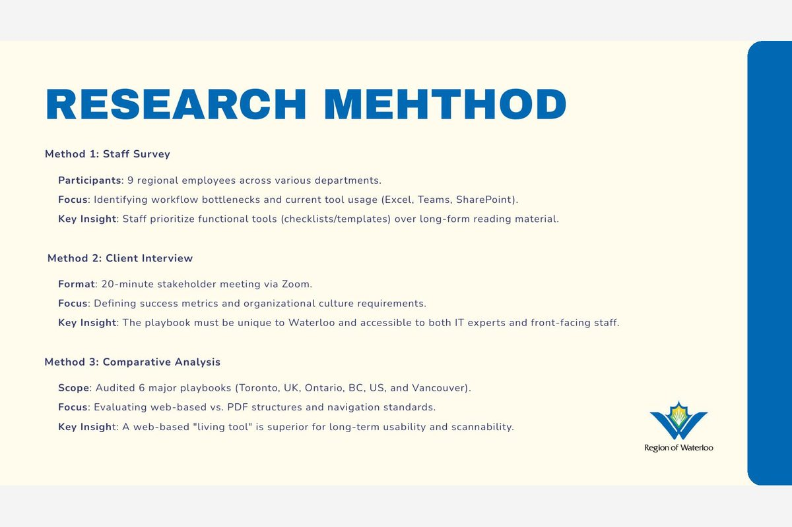
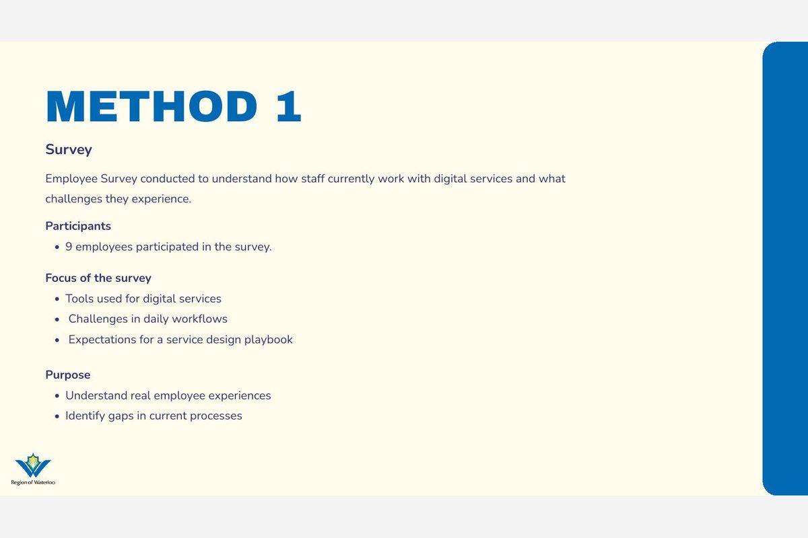
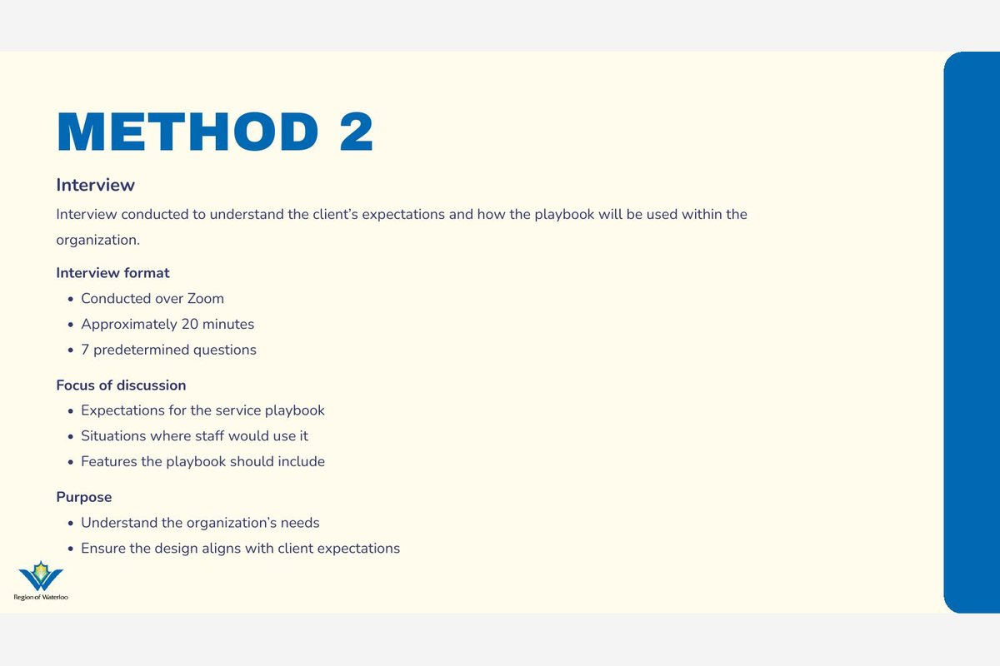
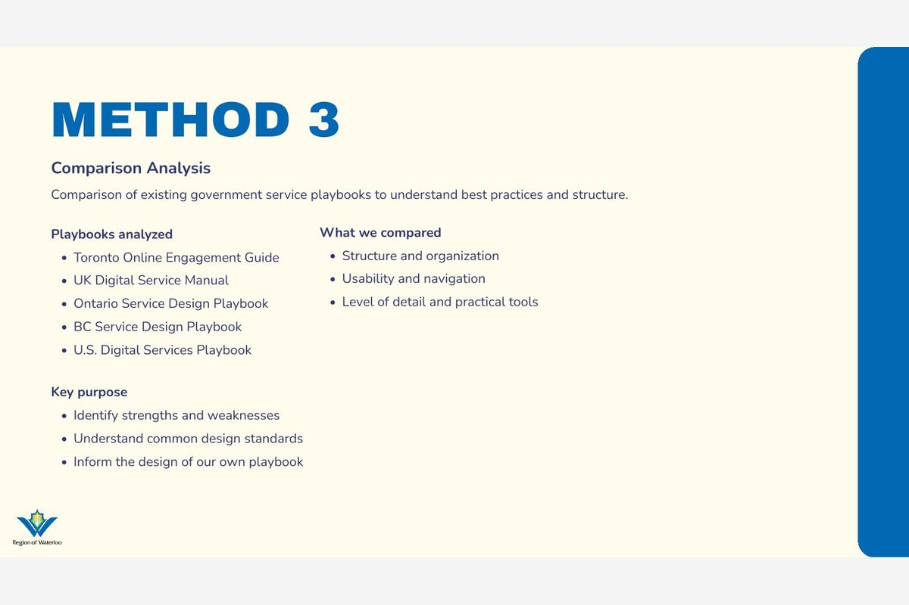
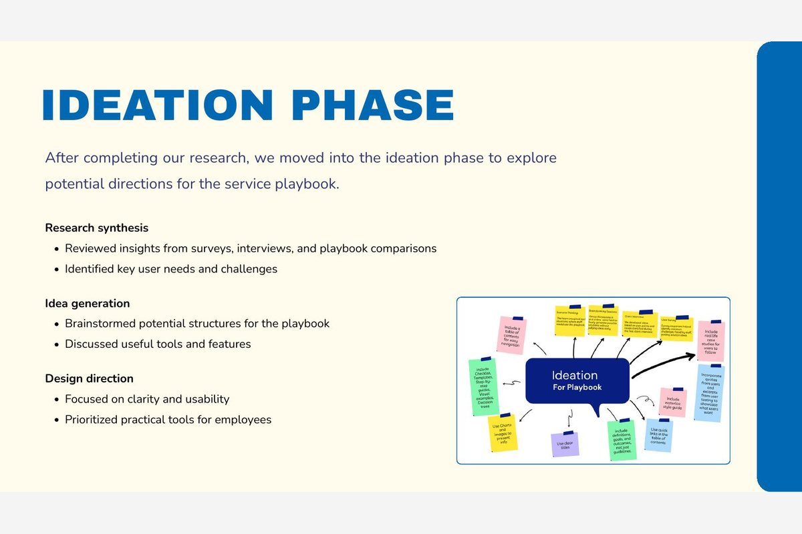
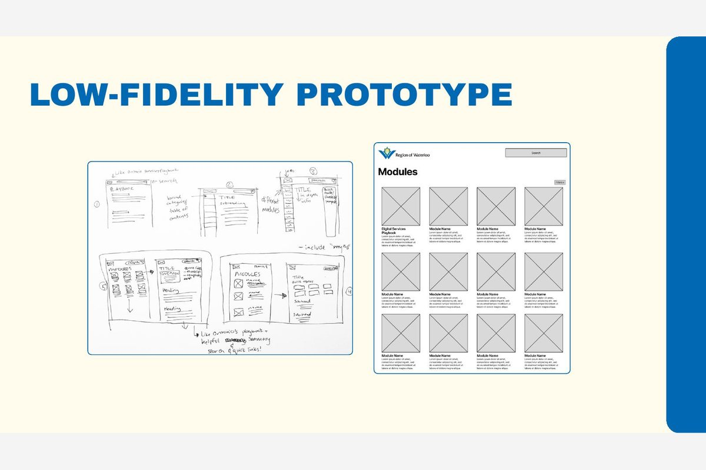
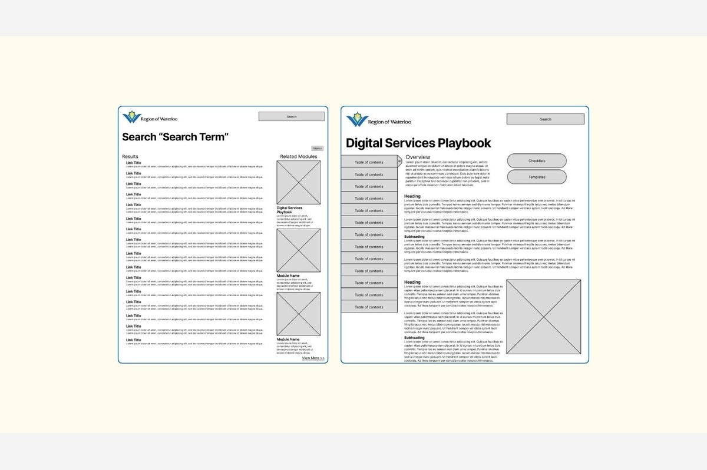
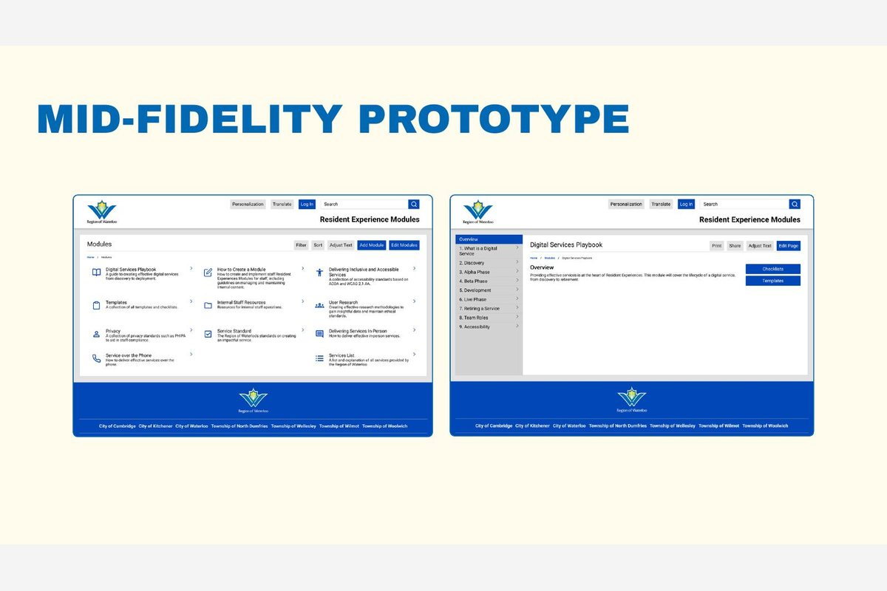
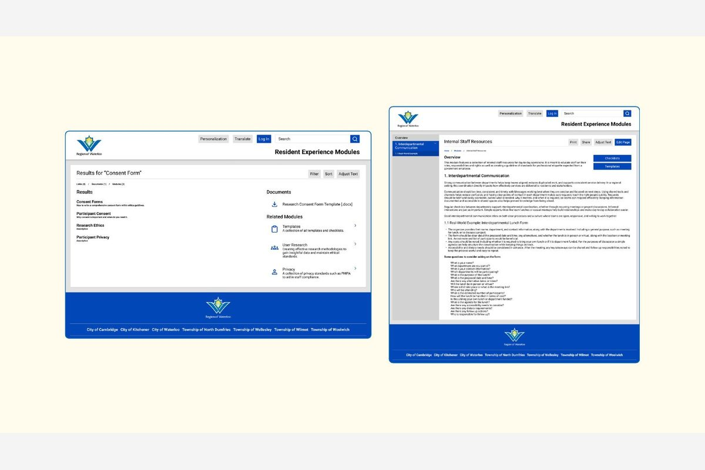

Client project
Region of Waterloo
A web-based Digital Services Playbook, built for a real municipal client, that turns long strategy documents into tools staff actually use.
Role
UX Researcher & Designer
Team
7 people, Design Thinking II
Duration
Milestones 2–4, one semester
Tools
Figma, Canva, Google Forms
The challenge
Region staff couldn't find service guidance. It was scattered across Excel, Teams, and SharePoint, and the strategy documents that existed were too long and technical for anyone without a design background.
My approach
Surveyed 9 staff across six departments, ran a stakeholder interview with the client, and audited six municipal playbooks. I personally reviewed the UK Government Digital Service Standard.
The result
A web-based, searchable Digital Services Playbook built around checklists and templates, presented to the Region at Milestone 4.
My contribution
I ran the UK playbook review that fed the comparative analysis, contributed to the staff survey and its synthesis, and helped shape the modular structure the final prototype used.

The problem
- Existing strategy documentation was lengthy, technical, and hard for staff without a UX or design background to apply
- No centralized source of information, so staff workflows were scattered across Excel, Teams, and SharePoint
- Staff were often unsure which department owned which service, slowing approvals and creating inconsistency
The solution
- A searchable, web-based Digital Services Playbook integrated directly into the staff intranet
- Modular structure with checklists, templates, and step-by-step guides instead of long-form reading
- A simple, uncluttered layout with a "Google-style" search built for staff who need answers fast, not more documents to read
Research
Staff survey
Surveyed 9 regional employees across Public Health, Transit, Housing, Childcare, Ontario Works, and Licensing & Bylaws, asking about workflow bottlenecks, confidence in service accessibility, and which resource format they'd actually use. The clearest signal: staff prioritize functional tools like checklists and templates over long-form reading material.
Client interview
Met with the client to define what success looked like and what would fit the Region's culture. The playbook had to be unique to Waterloo and usable by both IT specialists and front-facing staff.
Comparative analysis
Audited 6 major service design playbooks, one per team member: Solomon covered Toronto, I personally reviewed the UK Government Digital Service Standard, Maneet covered Ontario, Komal covered BC, Gayathiri covered the US Digital Services Playbook, and Faariha covered Vancouver. My own review of the UK standard found real strengths worth keeping: plain English, checklist-based team guides, and accessibility built in from the start. It also had a real weakness, which was high-level guidance with too few concrete examples. Across all six, a web-based "living tool" consistently outperformed static PDF documents for long-term usability and scannability.
Research question
- How might we construct a service design playbook that is clear, easy to use, and helps employees understand and integrate digital tools, collaborate across teams, and access relevant resources while delivering digital services?
Key benefits delivered
- Staff: clearer guidance, faster decisions, less cross-department confusion
- Organization: improved consistency and a structure that scales as new modules are added
- Residents: a more consistent, accessible digital service experience
How the solution addressed the problem
- Turns long strategy documents into practical tools staff can apply immediately, brought together in one place
- Reduces confusion over roles and responsibilities across departments through a single consistent source
- Step-by-step guides speed up decision-making instead of staff re-reading policy documents each time
- Search functionality replaces manually digging through folders and shared drives to find the right resource
Deliverables to the client
- Interactive Figma prototype of the full Digital Services Playbook
- Project summary and research-informed design rationale
- A modular structure built to scale, so new modules like accessibility and privacy can be added later without a redesign
Team
Solomon Chung, Hannan Khan, Komal Patel, Victor Snurnitsin, Faariha Tippu, Gayathiri Balakrishnan, and Maneet Sodhi, working in UX-200-BR2, Design Thinking II, taught by Prof. Jennifer Krul.
What the research told me
The three findings that shaped the direction more than anything else.
Insight 01
Staff wanted tools, not documents
The 9-person survey made it clear: checklists and templates beat long-form reading every time.
Insight 02
Nobody knew who owned what
Confusion over department ownership was slowing approvals and creating inconsistency across services.
Insight 03
Web beats PDF for living content
Across all 6 playbooks audited, the web-based ones consistently outperformed static PDFs for scannability.
Exploring the options
Where the direction came from before anything was designed.
What we compared
- Six existing playbooks, one per team member, scored on clarity, navigation, format, and whether staff could actually act on them
- Web-based living tools versus static PDF documents as the core structural choice
- Modular checklists and templates versus a single long reference document
What we chose & why
- A web-based, modular playbook, because every PDF-based example we audited failed the scannability test
- A single search-first entry point, because staff repeatedly said they couldn't find resources across folders and drives
- A structure built to accept new modules (accessibility, privacy) later without a redesign
What came out of it
The final deliverable was an interactive Figma prototype of the full Digital Services Playbook, presented to the Region of Waterloo at the Milestone 4 client review alongside a written client package covering the problem, research, and recommendations.
What I learned
This was the first project where the "user" wasn't a hypothetical persona. It was real staff, at a real municipality, with real constraints on what they could and couldn't change. That shifted how I approached the research: the comparative audit of six other playbooks mattered less as a design exercise and more as a way to show the client, concretely, that a web-based tool would outperform another static document. Working across a 7-person team also meant learning to hand off research findings clearly enough that teammates could design from them without me in the room.
Research and process
From the Milestone 2 and Milestone 4 presentations: how the research ran and how the prototype evolved.








